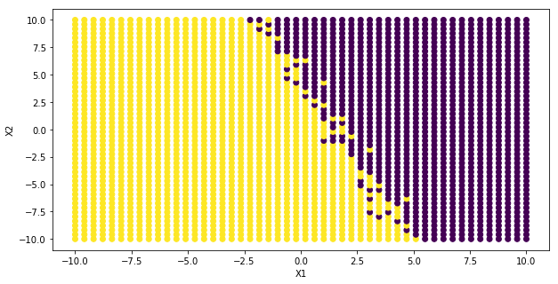
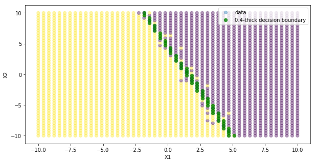
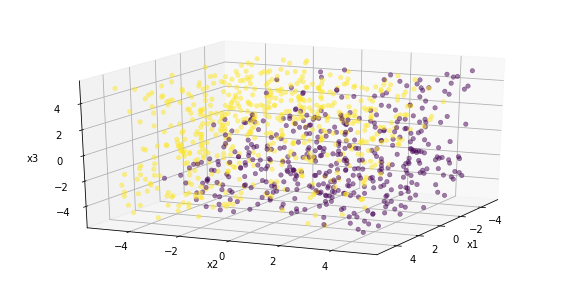
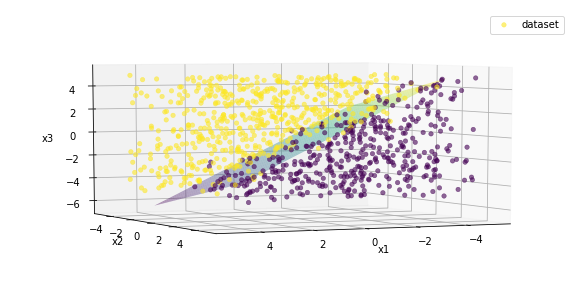
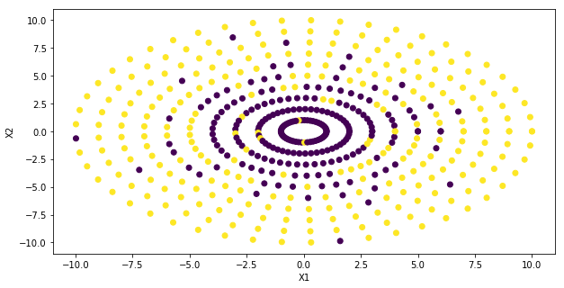
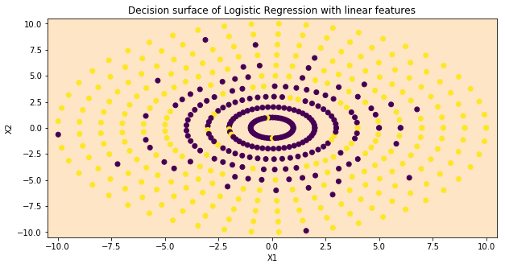
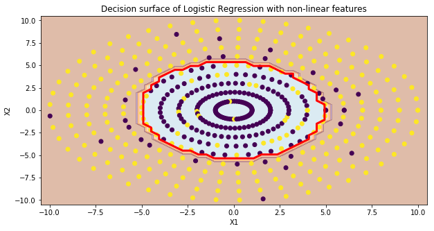

1. Introduction and assumptions
In this post-series, we are going to study the very basic modelling for classification problems, the logistic regression. Classification entails that the output is a discrete variable taking values on a pre-defined limited set, where the set dimension is the number of classes. Some examples are spam detection, object recognition and topic identification.
We have analyzed the theory in the first post, implement the algorithm with Numpy in Part 2 and using Sklearn and Tensorflow in Part 3. In this post, we solve a binary classification problem with a logistic regression algorithm with Scikit-learn, for multivariate logistic regression. In other words, we learn how to model different predictor spaces, namely 1D, 2D and 3D, and non-linear input predictors.
In this series, we do not split the dataset into training and testing sets, but we assess every model on the training set only. A dedicated post on model selection, overfitting/underfitting problem and regularization will be published soon.
Let’s get started!
We show how the logistic regression model handles different dimensions of the predictor space.
However, the problem is still a binary classification since the y response can only take 0 or 1 values.
2. Two-dimensional space of predictors
We create the Bernoulli distribution for the two predictors, x1 and x2, that range from -10 to 10.
Npntx, Npnty = 50, 50 # number of points
x1_ = np.linspace(-10, 10, Npntx)
x2_ = np.linspace(-10, 10, Npnty)
xx1, xx2 = np.meshgrid(x1_, x2_)
noise = 0.25*(np.random.randn(Npnty,Npntx)-1)
w0, w1, w2 = 5, -3, -1 # ground-truth parameters
hh = w0 + w1*xx1 + w2*xx2 + noise
Ynoise = 1/(1+np.exp(-hh))
Ycls = np.random.binomial(1., Ynoise) # dichotomous variable, n_trial=1 => Bernoulli distribution
The dataset is created by stacking the flattened version of the two 2D predictor arrays and the corresponding class array. We have therefore $50\cdot50$ examples over the rows, two predictors over the X columns and the response over the Y column.
XX = np.vstack((xx1.flatten(), xx2.flatten())).T
Ycls = Ycls.flatten().reshape(-1,1)
print([XX.shape, Ycls.shape])
[(2500, 2), (2500, 1)]
The figure reports the two-class distribution with yellow/purple colours.
plt.figure(figsize=(10, 5))
plt.scatter(xx1, xx2, c=Ycls, cmap='viridis')
plt.xlabel("X1")
plt.ylabel("X2");

One of the amazing features of Sklearn concerns its general structure that defines the training/prediction process into four steps and requires little or no adjustment for slightly different model settings.
lgr = LogisticRegression(C=1e5) # we want to ignore regularization
YY = Ycls[:, 0]
lgr.fit(XX, YY)
Ypred = lgr.predict(XX)
Ypred_prob = lgr.predict_proba(XX)
Ypred.shape, Ypred_prob.shape
((2500,), (2500, 2))
We retrieve the model parameters and realise that they are very close to the initial setting used to generate the dataset.
print("predictor parameters: ({:.3f},{:.3f}), intercept of decision boundary: {:.3f}"\
.format(lgr.coef_[0,0], lgr.coef_[0,1], lgr.intercept_[0]))
predictor parameters: (-3.405,-1.152), intercept of decision boundary: 5.198
This can be confirmed by assessing the model in terms of accuracy, precision and recall and comparing them to the data noise level.
print("Accuracy: {}".format(metrics.accuracy_score(YY, Ypred)))
print("Precision: {}".format(metrics.precision_score(YY, Ypred)))
print("Recall: {}".format(metrics.recall_score(YY, Ypred)))
Accuracy: 0.9796
Precision: 0.9819193324061196
Recall: 0.9826026443980515
The figure reports the original dataset and the decision boundary as a group of green points.
It has been determined by taking the second column of Ypred_prob, reshaping to the shape of one of the two predictors, measuring the distance from the 50% threshold and selecting points that are not farther than 20%.
It means the decision boundary is 40% thick, from 30% to 70%.
plt.figure(figsize=(10, 5))
plt.scatter(xx1, xx2, c=Ycls, cmap='viridis', label='data', alpha=0.4)
thickDecBound = np.abs(Ypred_prob[:,1].reshape(-1, xx1.shape[-1])-0.5)<0.2 # 0.4-thick decision boundary
plt.scatter(xx1[thickDecBound], xx2[thickDecBound], c='g', s=40, alpha=0.8, label='0.4-thick decision boundary')
plt.xlabel("X1")
plt.ylabel("X2")
plt.legend();

3. Three-dimensional space of predictors
We create the Bernoulli distribution for the three predictors, x1, x2 and x3, that range from -5 to 5.
The dataset is a random-generated 3D array, where rows are the number of samples.
Nx, Ny, Nz = 30, 20, 25
Npnt = 1000
xyz = 5*(2*np.random.rand(Npnt, 3)-1)
xx1, xx2, xx3 = xyz[:,0], xyz[:,1], xyz[:,2]
w0, w1, w2, w3 = 2, 3, -1, 3
noise = 0.05*(np.random.randn(Npnt)-1)
hh = w0 + w1*xx1 + w2*xx2 + w3*xx3 + noise
Ynoise = 1/(1+np.exp(-hh))
Ycls = np.random.binomial(1., Ynoise) # dichotomous variable, n_trial=1 => Bernoulli distribution
XX = xyz.copy()
Ycls = Ycls.flatten().reshape(-1,1)
print([XX.shape, Ycls.shape])
[(1000, 3), (1000, 1)]
The figure reports the two-class distribution with yellow/purple colours in the 3D space.
This plotting is enabled with the module mplot3d.
plt.figure(figsize=(10, 5))
ax = plt.axes(projection='3d')
ax.scatter(xx1, xx2, xx3, c=Ycls, cmap='viridis', linewidth=0.5, alpha=0.5)
ax.set_xlabel('x1')
ax.set_ylabel('x2')
ax.set_zlabel('x3')
ax.view_init(20, 25)
plt.show()

We utilize the exact same structure also to build the 3D model.
lgr = LogisticRegression(C=1e5) # we want to ignore regularization
YY = Ycls[:, 0]
lgr.fit(XX, YY)
Ypred = lgr.predict(XX)
Ypred_prob = lgr.predict_proba(XX)
Ypred.shape, Ypred_prob.shape
((1000,), (1000, 2))
We retrieve the model parameters and realise that they are very close to the initial setting used to generate the dataset. This can be confirmed by assessing the model in terms of accuracy, precision and recall and comparing them to the data noise level.
print("predictor parameters: ({:.3f},{:.3f},{:.3f}), intercept of decision boundary: {:.3f}"\
.format(lgr.coef_[0,0], lgr.coef_[0,1], lgr.coef_[0,2], lgr.intercept_[0]))
print("Accuracy: {}".format(metrics.accuracy_score(YY, Ypred)))
print("Precision: {}".format(metrics.precision_score(YY, Ypred)))
print("Recall: {}".format(metrics.recall_score(YY, Ypred)))
predictor parameters: (2.983,-1.023,2.857), intercept of decision boundary: 2.045
Accuracy: 0.952
Precision: 0.9656419529837251
Recall: 0.9484902309058615
The figure reports the original dataset and the decision boundary as a plane whose mesh colour is proportional to the $x_3$ predictor. The plane represents the set of predictor points for which the probability of success is equal to 50%. That means the hypothesis function, which is fed to the logistic function, is equal to 0:
$$ h = \omega_0 + \omega_1\cdot x_1 + \omega_2\cdot x_2 + \omega_3\cdot x_3 = 0 $$
The plane can be described as an explicit function between the $x_3$ predictor and the other two inputs:
$$ x_3 = -(\omega_0 + \omega_1\cdot x_1 + \omega_2\cdot x_2)/\omega_3 $$
It is clear how the plane separates the two classes nicely.
Npntx, Npnty, mrg = 20, 20, 4 # number of points
x1_ = np.linspace(-mrg, mrg, Npntx)
x2_ = np.linspace(-mrg, mrg, Npnty)
mx1, mx2 = np.meshgrid(x1_, x2_)
zz = -(lgr.intercept_[0] + lgr.coef_[0,0]*mx1 + lgr.coef_[0,1]*mx2)/lgr.coef_[0,2]
plt.figure(figsize=(10, 5))
ax = plt.axes(projection='3d')
ax.plot_surface(mx1, mx2, zz, rstride=1, cstride=1, cmap='viridis', edgecolor='none', alpha=0.4)
ax.scatter(xx1, xx2, xx3, c=Ycls, cmap='viridis', linewidth=0.5, alpha=0.6, label='dataset')
ax.set_xlabel('x1')
ax.set_ylabel('x2')
ax.set_zlabel('x3')
ax.view_init(5, 65)
plt.legend()
plt.show()

4. Two-dimensional non-linear space of predictors
Here we show how the logistic regression model handles non-linear 2D predictor space. However, the problem is still a binary classification since the y response can only take 0 or 1 values.
A non-linear space implies that the decision boundary that separates the two classes, if exists, is not a line anymore.
In this section, we will face an example of a circle-shaped boundary.
4.1 Two-dimentional non-linear data generation
We create the Bernoulli distribution for the two predictors, x1 and x2, from two intermediate variables, rr and tt, which model the radius and the angle of a point with respect to the polar coordinate system.
We apply the circle polar transformation to get the cartesian coordinates. However, the dichotomous response variable is controlled directly with the intermediate variables, so that the decision boundary should be:
$$ hh = \omega_0 + \omega_1\cdot r + \omega_2\cdot \theta = 0 \Rightarrow r = -\omega_0/\omega_1 = 5 $$
where $\omega_2$ has been set to 0.
Npntx, Npnty = 10, 50 # number of points
r_ = np.linspace(1, 10, Npntx)
t_ = np.linspace(0, 2*np.pi, Npnty)
rr, tt = np.meshgrid(r_, t_)
noise = 0*(np.random.randn(Npnty,Npntx)-1)
xx1 = rr*np.cos(tt)
xx2 = rr*np.sin(tt)
w0, w1, w2 = -5, 1, 0 # ground-truth parameters
hh = w0 + w1*rr + w2*tt + noise
Ynoise = 1/(1+np.exp(-hh))
Ycls = np.random.binomial(1., Ynoise) # dichotomous variable, n_trial=1 => Bernoulli distribution
plt.figure(figsize=(10, 5))
plt.scatter(xx1, xx2, c=Ycls, cmap='viridis')
plt.xlabel("X1")
plt.ylabel("X2");

XX = np.vstack((xx1.flatten(), xx2.flatten())).T
Ycls = Ycls.flatten().reshape(-1,1)
print([XX.shape, Ycls.shape])
[(500, 2), (500, 1)]
4.2 Logistic regression of linear predictors only
We build the logistic regression model as a function of the two raw predictors only. Since the two-class delimiter is not linear, it is not possible for this model to correctly classify this dataset. The following steps want to prove this statement. In the next subsection we introduce the polynomial feature method to extend the input predictor space to non-linear features and test it to the dataset classification.
lgr = LogisticRegression(C=1e5) # we want to ignore regularization
YY = Ycls[:, 0]
lgr.fit(XX, YY)
Ypred = lgr.predict(XX)
Ypred_prob = lgr.predict_proba(XX)
Ypred.shape, Ypred_prob.shape
((500,), (500, 2))
The accuracy and the precision highlights the poor performance of the model, which is as low as what we can get with the trivial model that returns 1 for any input. The trivial model accuracy can be calculated as the fraction of instances of the Y variable being equal to 1, to the total number of instances.
print("Accuracy of the trivial model: {}".format(np.sum(YY==1)/YY.shape[0]))
print("Accuracy: {}".format(metrics.accuracy_score(YY, Ypred)))
print("Precision: {}".format(metrics.precision_score(YY, Ypred)))
print("Recall: {}".format(metrics.recall_score(YY, Ypred)))
Accuracy of the trivial model: 0.55
Accuracy: 0.55
Precision: 0.55
Recall: 1.0
The figure confirms that the model is not able to split the two classes at all.
Npnt = 50 # number of points of the mesh
mrg = .5
x1min, x1max = xx1.min() - mrg, xx1.max() + mrg
x2min, x2max = xx2.min() - mrg, xx2.max() + mrg
x1grd, x2grd = np.meshgrid(np.linspace(x1min, x1max, Npnt), np.linspace(x2min, x2max, Npnt))
ygrd = lgr.predict(np.vstack((x1grd.ravel(), x2grd.ravel())).T)
ygrd = ygrd.reshape(x1grd.shape)
plt.figure(figsize=(10, 5))
# contour
plt.contourf(x1grd, x2grd, ygrd, cmap=plt.cm.Paired, alpha=0.4)
plt.title("Decision surface of Logistic Regression with linear features")
plt.axis('tight')
# dataset
plt.scatter(xx1, xx2, c=Ycls, cmap='viridis')
plt.xlabel("X1")
plt.ylabel("X2")
# decision boundary
plt.contour(x1grd, x2grd, ygrd, levels = [0], colors=('k',), linestyles=('-',),linewidths=(2,));

We introduce the Sklearn method to generate polynomial and interaction features, from a set of input features. If we have two inputs, ($x_1$, $x_2$), we can get the full set of a polynomial class of degree N. For instance, if n = 3, we get the following 10-sized set:
$$ (1, x_1, x_2, x_1^2, x_1\cdot x_2, x_2^2, x_1^3, x_1^2\cdot x_2, x_1\cdot x_2^2, x_2^3) $$
Here we show what we get if ($x_1$, $x_2$) = (3, 2).
from sklearn.preprocessing import PolynomialFeatures
pf = PolynomialFeatures(3)
ff = np.array([3, 2])
print(ff)
print(pf.fit_transform(ff.reshape(1,-1)))
[3 2]
[[ 1. 3. 2. 9. 6. 4. 27. 18. 12. 8.]]
pf = PolynomialFeatures(2)
XXnl = pf.fit_transform(XX) # not-linear
print(XXnl.shape)
(500, 6)
lgr = LogisticRegression(C=1e5) # we want to ignore regularization
lgr.fit(XXnl, YY)
Ypred = lgr.predict(XXnl)
The model performance has improved very much.
print("predictor parameters: ({:.3f},{:.3f}), intercept of decision boundary: {:.3f}"\
.format(lgr.coef_[0,0], lgr.coef_[0,1], lgr.intercept_[0]))
print("Accuracy: {}".format(metrics.accuracy_score(YY, Ypred)))
print("Precision: {}".format(metrics.precision_score(YY, Ypred)))
print("Recall: {}".format(metrics.recall_score(YY, Ypred)))
predictor parameters: (-1.229,0.016), intercept of decision boundary: -1.229
Accuracy: 0.842
Precision: 0.892
Recall: 0.8109090909090909
We show the new decision boundary, where brown is for yellow dots that belong to class 1, while cyan is for purple dots from class 0. Since the decision boundary is not linear, it is not trivial to get its explicit or parametric formulation.
We exploit the contour function from Matplotlib, which can draw isolines of a surface for specific z-levels.
In this case it is enough to set the levels attribute to the single 0-element list, in order to get the solid red line.
ygrd = lgr.predict(pf.fit_transform(np.vstack((x1grd.ravel(), x2grd.ravel())).T))
ygrd = ygrd.reshape(x1grd.shape)
plt.figure(figsize=(10, 5))
# contour
plt.contourf(x1grd, x2grd, ygrd, cmap=plt.cm.Paired, alpha=0.4)
plt.title("Decision surface of Logistic Regression with non-linear features")
plt.axis('tight')
# dataset
plt.scatter(xx1, xx2, c=Ycls, cmap='viridis')
plt.xlabel("X1")
plt.ylabel("X2")
# decision boundary
cs = plt.contour(x1grd, x2grd, ygrd, levels = [0], colors=('r',), linestyles=('-',),linewidths=(3,));
#plt.clabel(cs, fmt = '%2.1d', colors = 'k', fontsize=14) #contour line labels
